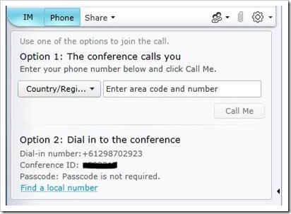

To attend one of our Lync Webcasts, you'll get a notification (either by email or on a web page) that looks like this;
There are three ways you can join the meeting
- Audio alone (dial-in);
- Web client for screen casting and dial-in for audio; or
- Lync Client
Audio alone
Simply dial one of the numbers shown in your invitation or click the "Find a local number" link to get a list of all of the available dial-in numbers from around the world. When prompted, enter the Conference ID in your invitation (I've scrubbed out the ID above so you're not tempted to enter it, you need the ID from your invitation).
That should be it. Depending on the settings from the meeting organiser, you may be in the "meeting lobby" until you're admitted to the meeting, or you may go straight into the meeting.
Web Client
If you need to see what the presenter is doing as well as hearing the presentation, you'll need to connect to the web client (or using the Lync client below).
Click on the Join Lync Meeting link in your invitation, and one of two things will happen. If you've already got a Lync client installed, it will open and the meeting should start (see the Lync Client section below).
If you don't have a Lync client installed, after a couple of redirects, you should be presented with the following choice:
Click the Join the meeting using your web browser link (we'll talk about the Lync Attendee option later on)
A new browser window will open:
Choose Join as a guest and enter your name (as you'd like to have it appear in the meeting)
then click the Join Meeting button.
Depending on how the meeting organiser has set up the meeting, you may see this message:
and then this message:
Click OK, and you'll be in the meeting:
There are a few things to point out here.
First, the area marked Presso in the image above is where the presentation will happen. In the screenshot, the presenter is conducting a poll, but this is also where you'll see PowerPoint slides, the presenter's screen or whatever else is displayed.
Next, the area marked IM allows you to type questions/comments that will be seen (and potentially responded to) by everyone else in the meeting. This is a great way to ask questions as the presenter (or someone assisting the presenter) and answer them asynchronously, without interrupting the presentation itself.
Finally, clicking the highlighted tab marked Phone pops up the options for getting audio to go along with the meeting:

Option 1 gets the conference to call you - simply enter your phone number and click Call Me.
Option 2 is the same process as the one outlined in the Audio Alone section above.